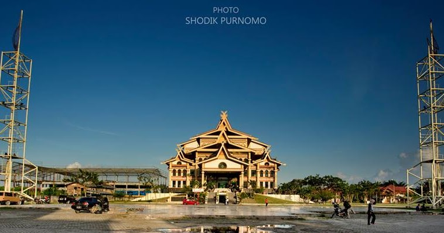

Home

Riau adalah sebuah provinsi di Indonesia yang terletak di bagian tengah pantai timur pulau Sumatra. Wilayah pesisirnya berbatasan dengan Selat Malaka. Hingga tahun 2004, provinsi ini juga meliputi Kepulauan Riau, sekelompok besar pulau-pulau kecil (pulau-pulau utamanya antara lain Pulau Batam dan Pulau Bintan) yang terletak di sebelah Timur Sumatra dan sebelah Selatan Singapura. Kepulauan ini dimekarkan menjadi provinsi tersendiri pada Juli 2004. Ibu kota dan kota terbesar Riau adalah Pekanbaru, dan kota besar lainnya adalah kota Dumai